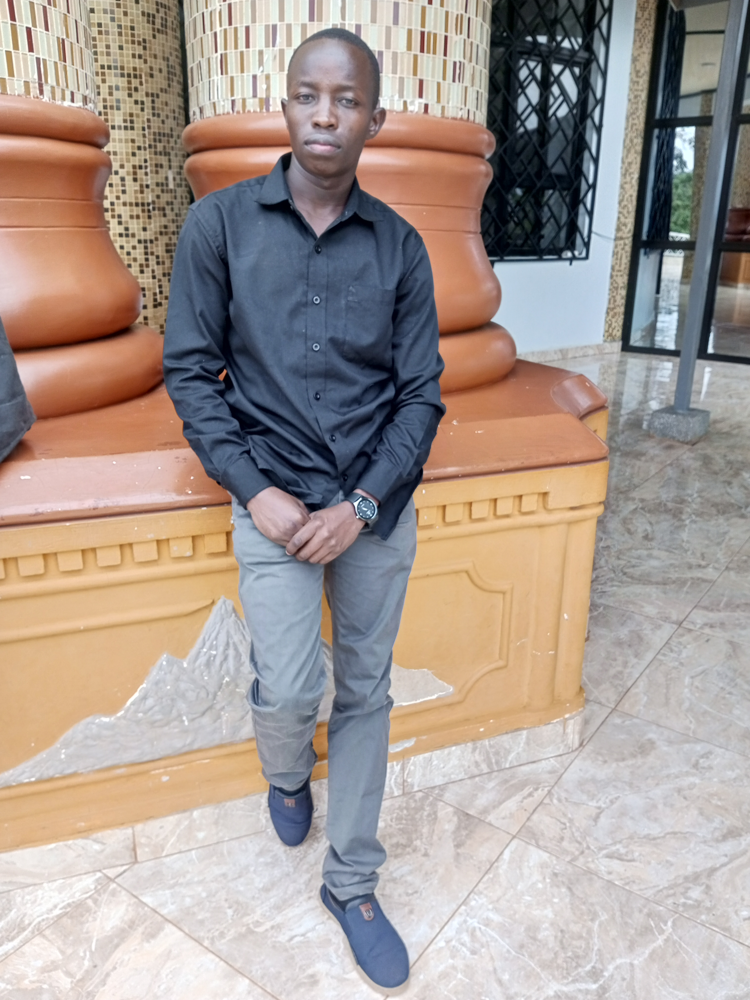
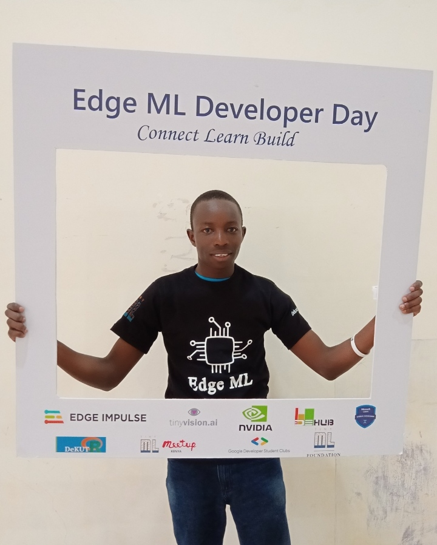
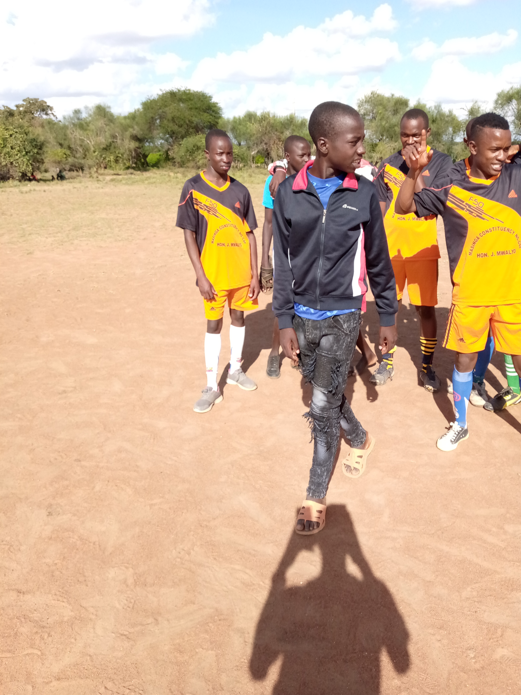
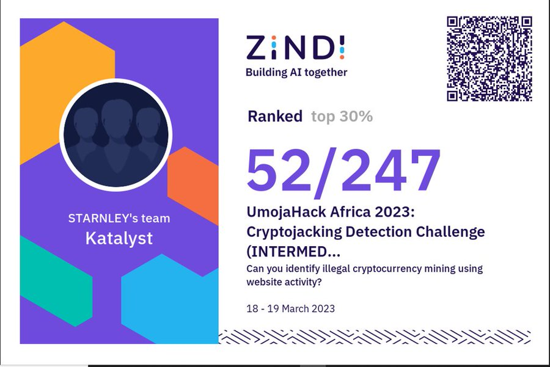

Welcome to My Page!
Hello there, my name is Stanley Kioko. I'm thrilled to welcome you to my page! Get to know me by scrolling and a few clicks as you please 😃.
As a go-getter and lifelong learner, I'm all about seizing every opportunity life throws my way and diving headfirst into new adventures.
So, get ready to embark on a whirlwind tour of my passions, experiences, and achievements. Feel free to interact with my CV as you navigate through. This's a ride you won't want to miss.
Welcome aboard!
About Me

I Thrive in Communities 🤝
I'm a firm believer in the adage "if you want to go fast, go alone. If you want to go far, go together". While individual efforts may propel us forward momentarily, it's the collective strength of a community that sustains progress and propels us towards enduring success. Within these communities, I've witnessed firsthand the transformative impact of mentorship, guidance, and shared knowledge.


Communities I'm Active In
These communities have not only expanded my knowledge but have also allowed me to contribute meaningfully to the growth of others. Together, we are driving forward the spirit of collaboration, innovation, and lifelong learning.
Sports ⛹️♂️

"All work and no play makes Jack a dull boy." I can't risk being Jack 😂. I take play seriously. That play comes in the form of football—a sport that's more than just a game; it's a passion that ignites my spirit and fuels my drive. In the midst of busy schedules and demanding tasks, football serves as my sanctuary.
Achievements 🏆

- Completed a six-month rigorous Data Analytics training program at Primo Academy
- Participated in a hackathon hosted by KEMRI
Click the links below for more information: